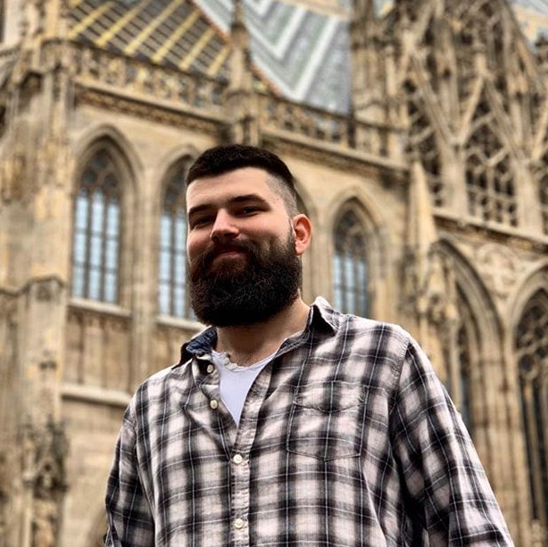

ALEKSA STOJANOVIĆ

Kreativni duh večito zaljubljen u filologiju i društvene nauke. No, duboko verujem u sentencu Scio me nihil scire, i u neophodnost konstantnog i celoživotnog učenja, usavršavanja i osavremenjivanja, kako u oblastima kojima se bavim, tako i u oblastima sa kojima se još uvek nisam upoznao. Lepo sam ovo sastavio, zvuči vrlo intelektualno.
Osnovne informacije
| Godine: |
24 |
| Mesto rođenja: |
Niš |
| Profesija: |
student srpskog jezika i književnosti |
| Humor: |
diskutabilan |
Interesovanja
- Volim da putujem.
Ovo su samo neki od gradova koje sam posetio:
- Evropski gradovi: Berlin, Beč, Bratislava, Budimpešta, Pariz, Prag...
- Balkanski gradovi: Sarajevo, Sofija, Skoplje, Podgorica, Tirana...
- Naravno, kao student književnosti, volim da čitam.
- Domaće pisce: Selimović, Andrić, Crnjanski, Ćosić...
- Strane pisce: Gogolj, Po, Lavkraft, Kafka, Bodler...
- Veliki sam gejmer.
Slobodno vreme provodim igrajući igre različitih žanrova:
- PC: League of Legends, Civilization 6, XCOM2, Dead Space...
- Nintendo Switch: The Legend of Zelda: Breath of the Wild, Mario Kart 8, Dead Cells, Bayonetta 2...
Pošalji mi mejl da saznaš više o meni ovde.
Vrati se na vrh stranice.